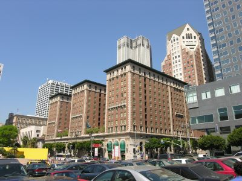
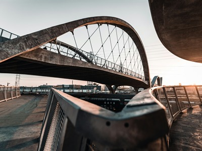
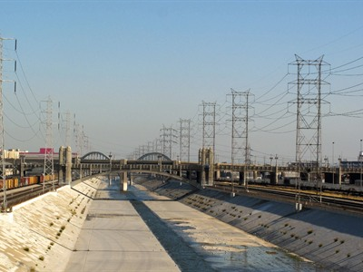
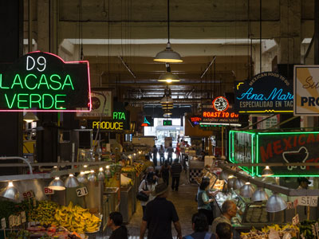
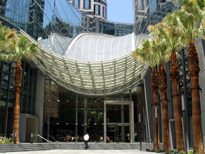
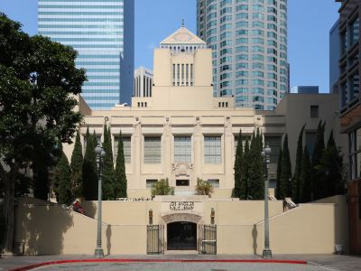
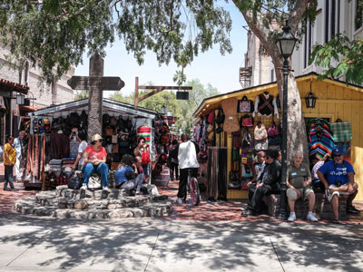
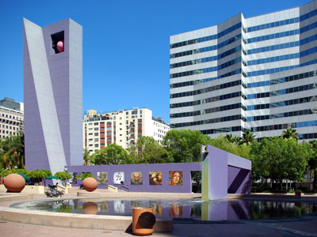

Downtown Los Angeles Travel Guide
Central business district of Los Angeles covering 5.84 sq mi. divided into districts named for the activities concentrated there now or historically, including the Arts, Civic Center, Fashion, Banking, Theater, Toy, and Jewelry districts
Places to See in Downtown Los Angeles

Shesmax, CC BY-SA 4.0, via Wikimedia Commons; Image Size Adjusted

Angels Flight Railway
Landmark and historic 2 ft 6 in (762 mm) narrow gauge funicular railway with two funicular cars on the 298 feet (91 m) long inclined railway

Wearethenext, CC BY-SA 3.0, via Wikimedia Commons; Image Size Adjusted

Biltmore Los Angeles
Historic hotel featuring ornate interiors, grand ballrooms, and a legacy of hosting iconic cultural and political events.

Wearethenext, CC BY-SA 3.0, via Wikimedia Commons; Image Size Adjusted
Bradbury Building
Architectural landmark best known for its extraordinary skylit atrium of access walkways, stairs and elevators, and their ornate ironwork.
Japanese American National Museum
National museum dedicated to preserving and sharing the history, culture, and artistic contributions of Japanese Americans through exhibitions, artifacts, and educational programs.
LA Plaza de Cultura y Artes
Cultural museum and community gathering place dedicated to preserving and celebrating the history, art, and contributions of Mexican and Mexican American communities in Los Angeles.

Grinnell Point and Swiftcurrent Lake from the Many Glacier Hotel
Jeff P from Berkeley, CA, USA, CC BY 2.0, via Wikimedia Commons; Image Size Adjusted
.jpg){kind=link}
Ribbon of Light
Illuminated public art installation composed of evenly spaced urban streetlights creating a symmetrical outdoor display of glowing vertical forms.

Downtowngal, CC BY-SA 3.0, via Wikimedia Commons; Image Size Adjusted

Sixth Street Viaduct
Modern arched bridge spanning a river channel, designed for pedestrians, cyclists, and vehicles while serving as a prominent architectural landmark.
-400.jpg)
The Broad
Modern art museum housing nearly 2,000-piece collection of contemporary art, featuring 200 artists, including works by Cindy Sherman, Jeff Koons, Ed Ruscha, Roy Lichtenstein and Andy Warhol
Cathedral of Our Lady of the Angels
Modern cathedral featuring abstract architecture, religious art, and spaces for worship, reflection, and community gatherings.
Chinatown
Neighborhood in Downtown Los Angeles that became a commercial center for Chinese and other Asian businesses and includes restaurants, shops and art galleries

DXR, CC BY-SA 4.0, via Wikimedia Commons; Image Size Adjusted

Grand Central Market
Bustling indoor marketplace featuring diverse food vendors, artisanal stalls, and casual eateries offering a wide range of local and international cuisine.
Grand Park
Park stretches between the Los Angeles City Hall and the Los Angeles Music Center on Grand Avenue and includes tree-shaded sidewalks, drought-tolerant plants, an interactive fountain plaza, and performance lawns and courtyards

Jeff P from Berkeley, CA, USA, CC BY 2.0, via Wikimedia Commons; Image Size Adjusted
Inter-Continental Hotel Los Angeles
Luxury high-rise hotel offering panoramic city views, rooftop dining, and upscale amenities in a sleek, modern setting.
Rob Young from United Kingdom, CC BY 2.0, via Wikimedia Commons; Image Size Adjusted
.jpg){kind=link}
The Last Bookstore
Independent bookstore featuring a whimsical labyrinth of books, art installations, and vinyl records in a historic downtown space.

Rob Young from United Kingdom, CC BY 2.0, via Wikimedia Commons; Image Size Adjusted
Los Angeles Central Library
Main branch of the Los Angeles Public Library designed with influences of ancient Egyptian and Mediterranean Revival architecture
Los Angeles City Hall
Center of the government of the city of Los Angeles at 454 feet (138 m) high, is the tallest base-isolated structure in the world
Museum of Contemporary Art, Los Angeles / MOCA
Contemporary art museum in Downtown Los Angeles consisting primarily of American and European contemporary art created after 1940

Visitor7, CC BY-SA 3.0, via Wikimedia Commons; Image Size Adjusted

Olvera Street
Neighborhood on the eastern edge of Downtown Los Angeles where new art galleries have increased recognition of the area amidst the entire downtown where other art museums are found.

The Angels 2010, CC BY-SA 3.0, via Wikimedia Commons; Image Size Adjusted

Pershing Square
A historic urban public park featuring open plazas, grassy areas, fountains, monuments, and an amphitheater used for concerts, events, and community gatherings.
Union Station
Main railway station in Los Angeles is the largest railroad passenger terminal in the Western United States
Walt Disney Concert Hall
Concert hall in downtown Los Angeles, designed by Frank Gehry and is the home of the Los Angeles Philharmonic orchestra and the Los Angeles Master Chorale
Overview
Downtown Los Angeles (DTLA) is the city’s central business district and a fast-growing residential neighborhood of about 85,000 people, packed with architecture, museums, performing arts venues, historic theaters, food halls and nightlife. Highlights include the Walt Disney Concert Hall, The Broad, Grand Central Market, Olvera Street, Little Tokyo, Union Station, Angels Flight and Arts District galleries and restaurants. The Crypto.com Arena and L.A. Live anchor the entertainment district.
Banks, department stores and movie palaces once drew people of every background downtown, but it declined after the 1950s and revived from the early 2000s, when pre-war buildings along Broadway were restored as condos, offices and shops. It is divided into districts including the Civic Center, Bunker Hill, the Arts, Fashion, Jewelry and Historic Core districts, and it has one of the country’s largest skylines, including the U.S. Bank Tower and Wilshire Grand Center.
Downtown is home to the Los Angeles Lakers, Kings and Sparks at Crypto.com Arena, and it is next door to Dodger Stadium and the USC Trojans at Exposition Park.
This article uses material from the Wikipedia article "Hollywood", which is released under the Creative Commons Attribution-Share-Alike License 3.0